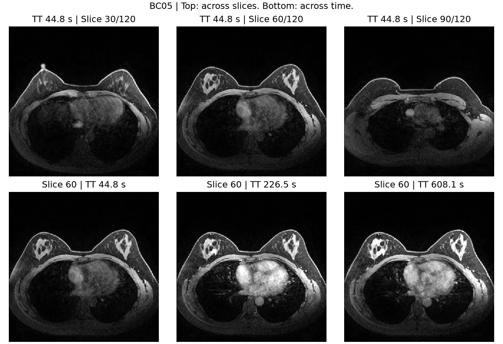
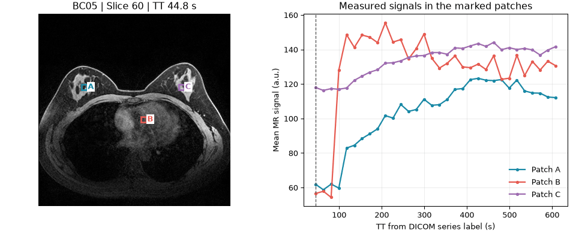
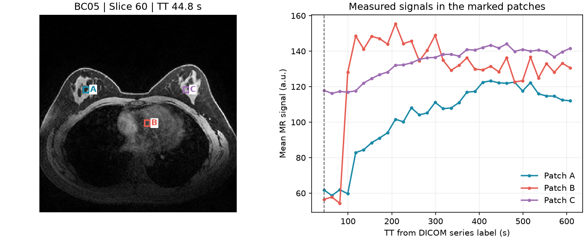
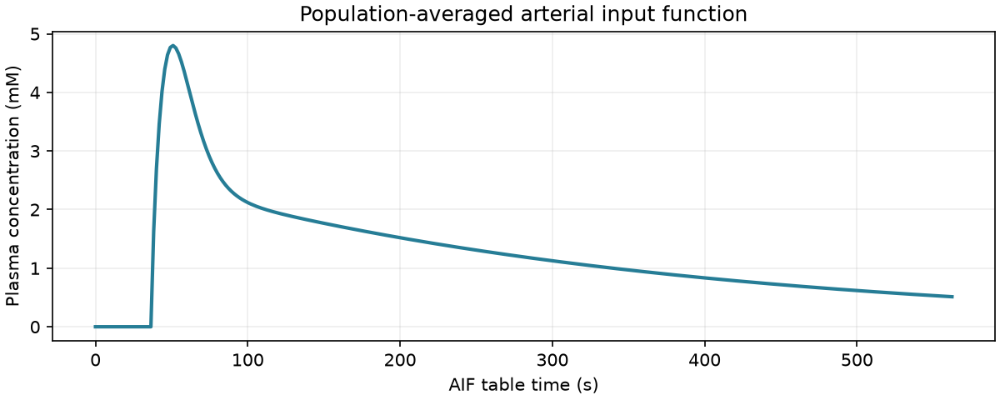

一次 DCE-MRI 检查连续采集多个三维体积，用来观察注入对比剂后 MRI 信号如何随位置和时间变化。
10 位患者 → 20 次检查 → 每次检查 28–32 个带 TT 的时间帧。 一个时间帧是一份 3D 体积，由多张二维 DICOM 切片堆叠。空间轴是切片、行、列，加上时间轴后是一份 4D 序列。
同一患者的 Visit 1 和 Visit 2 来自两次不同检查。这个项目要补的是单次检查内部的动态时间点。 TT 来自 DICOM 序列名称，报告沿用该标签的秒数。
| 患者 | 访视 | MR 时间帧 | 每帧 DICOM 数（最少–最多） | TT 间隔中位数 (s) | 有标记的帧 |
|---|---|---|---|---|---|
| BC01 | 1 | 28 | 128–128 | 20.2 | 0 |
| BC01 | 2 | 28 | 128–128 | 20.2 | 0 |
| BC05 | 1 | 32 | 120–120 | 18.2 | 0 |
| BC05 | 2 | 32 | 120–120 | 18.2 | 0 |
| BC06 | 1 | 32 | 120–120 | 18.2 | 0 |
| BC06 | 2 | 32 | 120–120 | 18.2 | 0 |
| BC08 | 1 | 32 | 120–120 | 18.2 | 0 |
| BC08 | 2 | 32 | 120–120 | 18.2 | 0 |
| BC10 | 1 | 32 | 120–120 | 18.2 | 0 |
| BC10 | 2 | 32 | 120–120 | 18.2 | 0 |
| BC12 | 1 | 32 | 120–120 | 18.2 | 0 |
| BC12 | 2 | 32 | 120–120 | 18.2 | 0 |
| BC13 | 1 | 32 | 120–120 | 18.2 | 0 |
| BC13 | 2 | 32 | 120–120 | 18.2 | 0 |
| BC14 | 1 | 32 | 120–120 | 18.2 | 0 |
| BC14 | 2 | 32 | 120–120 | 18.2 | 0 |
| BC15 | 1 | 32 | 120–120 | 18.2 | 0 |
| BC15 | 2 | 32 | 120–120 | 18.2 | 0 |
| BC16 | 1 | 32 | 120–120 | 18.2 | 0 |
| BC16 | 2 | 32 | 120–120 | 18.2 | 0 |
示例是 BC05 · Visit 1，每帧包含 120 张 320 × 320 切片。 图像采用统一灰度范围，可以直接比较不同帧的亮度。



| 文件 | 工作表 | 字段 | 对项目有什么用 |
|---|---|---|---|
| QIN-Breast-DCE-MRI_Response.xlsx | Sheet1 | Complete response | Non-complete response | 病理完全响应 3 人，未完全响应 7 人。曲线补全不使用这些标签。 |
| QINBreastDCE-MRI_AIF-1.xlsx | AIF Timecourse | AIF [CRp] (mM) | Time Course (sec) | from Li et al 2008, doi: 10.1073/pnas.0804224105 | 310 个时间–浓度样本。群体平均动脉输入函数，用于描述对比剂的输入。 |

在 20 次检查中找到了列在清单里的 DICOM-KO 辅助对象。本地另发现 0 个独立的 NIfTI 或 MATLAB 文件。 当前按文件名和清单识别辅助对象，KO 附件和病灶 ROI 仍待核实。